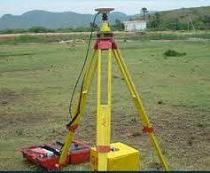

About Geoprecise
Land surveyors based in Kimana Town, serving landowners, buyers and builders.
Careful measuring, plain explanations
Geoprecise Land Survey helps landowners, buyers and builders in Kimana and across Kajiado County. Whether you want to confirm a boundary, split a parcel or check land before you buy, we measure carefully and explain each step in plain language.
Our fieldwork uses modern satellite (GNSS) equipment, so your measurements are accurate and your beacons sit where they should.

What we bring to the field
- GNSS (GPS) receivers on survey poles
- Tripod-mounted survey instrument
- Handheld field controller for recording points
- GIS tools for digital maps and plans
Where we work
Our office is in Kimana Town. We serve Kimana and the wider Kajiado County. Not sure if we cover your area? Send us the location.
- Kimana Town
- Kajiado County
Tell us about your land.
Send a message and we will tell you the next steps and cost.